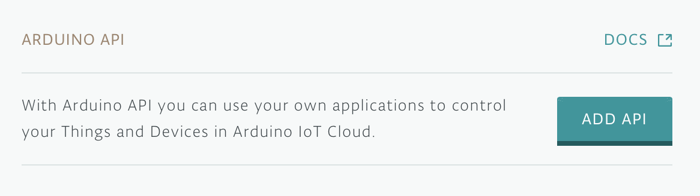

Create an 'On air' indicator for your home office using
Arduino + Heroku
-
Follow the instructions on the box to create your Arduino account,
register the kit, and connect it to your computer
-
Go to
Your Things
in your Arduino IoT account and click "Add New Thing"

-
Enter a name for your new Thing and set it to be associated with your
new device "MKR WiFi 1010"

-
Create the following properties for your new Thing
Make sure that all the "Character String" properties have the
following settings
And that the "pendingMessage" property has the following settings
- Click "Edit Sketch"

-
Enter the WiFi credentials in the "Secret" tab
-
Copy and paste the contents of
this .ino file
into the main .ino file of your sketch and click "Upload and Save"

-
Create a new API and download the resulting Client ID and Secret

-
Click the button below to deploy your Heroku app. Use the Client ID
and Secret that you downloaded in the previous step.